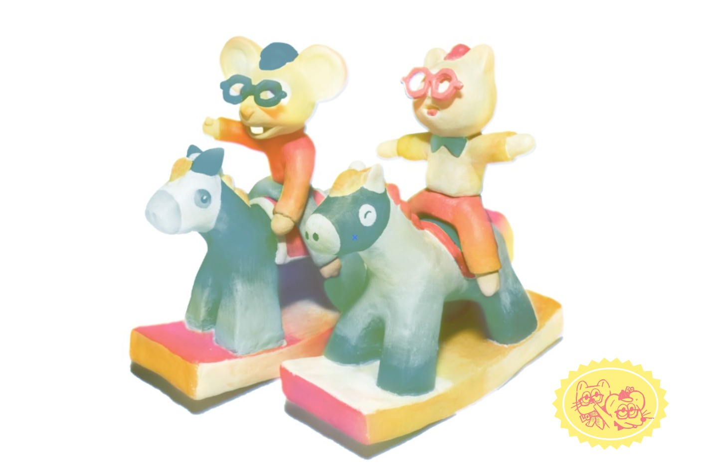
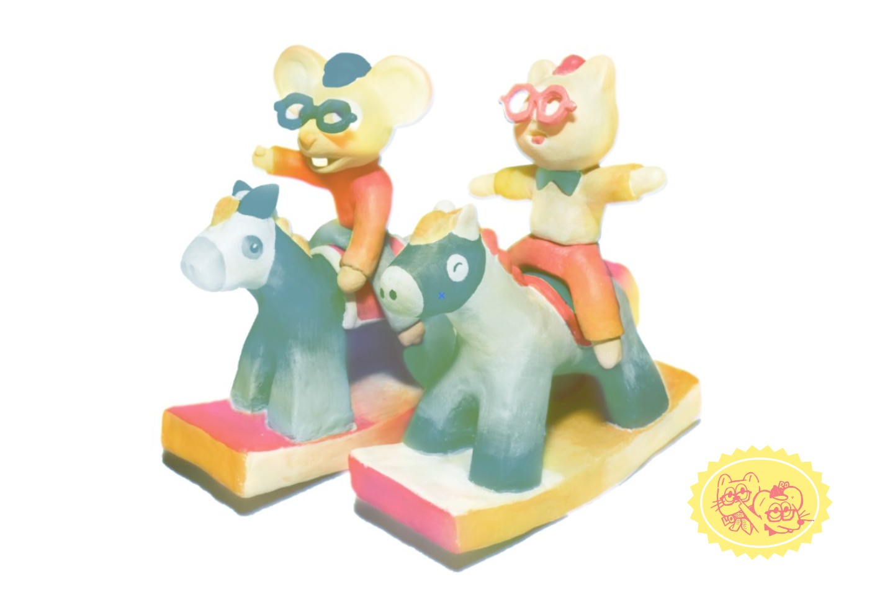
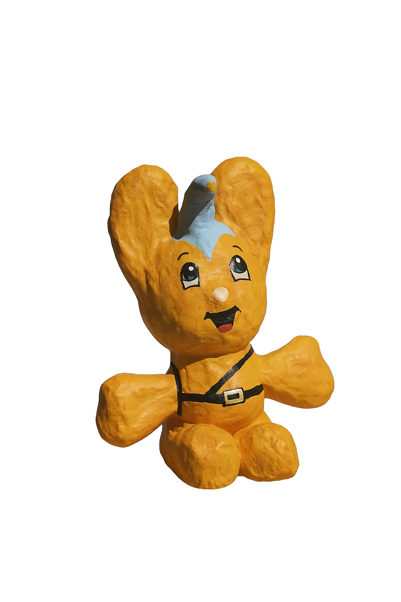

孤芳小隊 GOOD FUN TEAM
由 ROTION87 與 No.423 共同組成。兩人結合影像、造型與手作物件的創作實踐， 以角色「鼠」與「雪貂」為象徵，探索日常與異想的交界，在真實與虛構之間建立屬於兩人的敘事世界。
 

孤芳小隊 2026 馬年賀卡

《空心 IN PLACE》攝影折頁小誌

《Soft Drinks》酒罐絲巾

《30時間》攝影小誌 2nd

《Hand-it 手心貼》便利貼

《PASTE BOOK》台灣篇

《PASTE BOOK》日本篇

「問號蠟燭籤」張子

PIPO君 張子